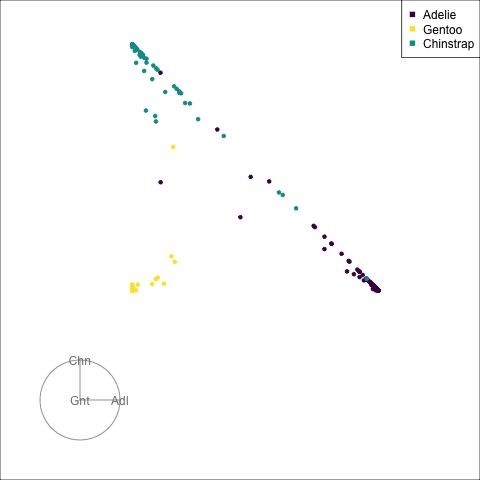
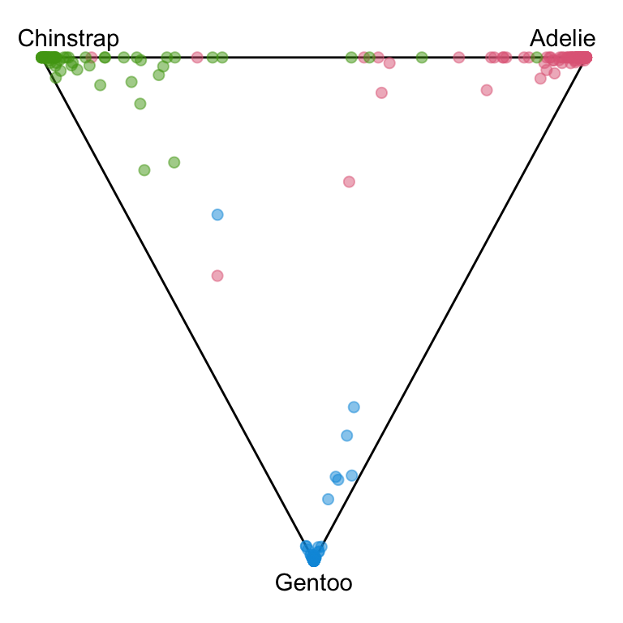
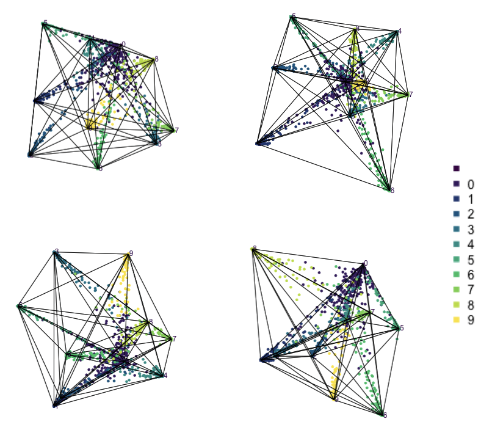
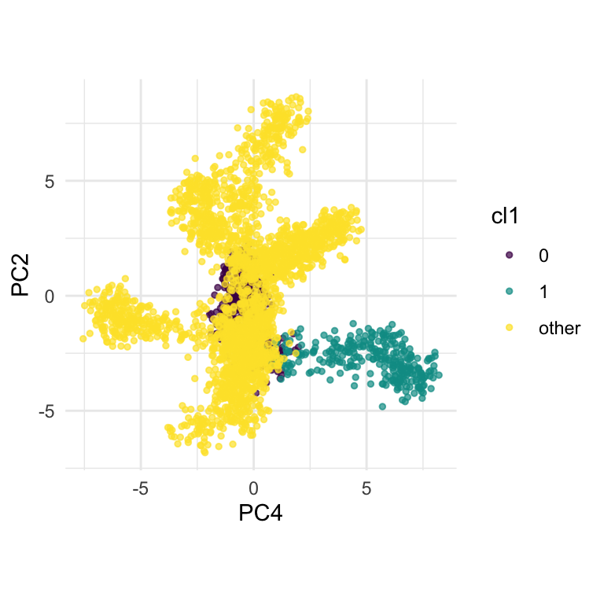
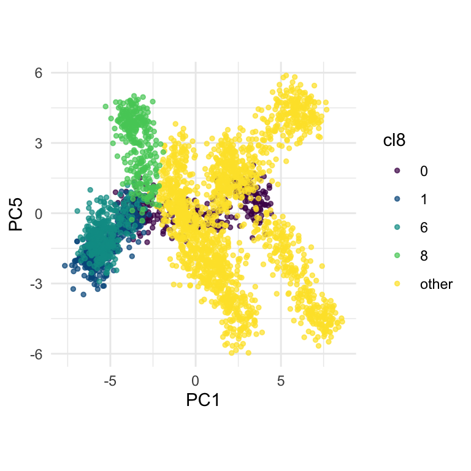
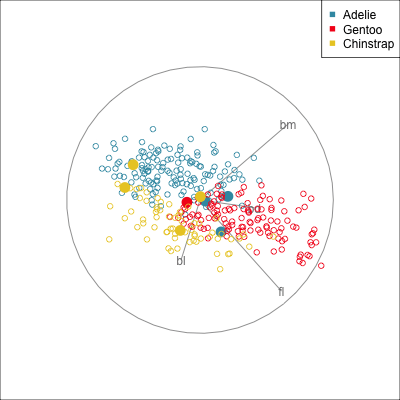

The tree algorithm Breiman et al. (1984) is a simple and versatile algorithmic method for supervised classification. The basic tree algorithm generates a classification rule by sequentially splitting the data into two buckets. Splits are made between sorted data values of individual variables, with the goal of obtaining pure classes on each side of the split. The inputs for a simple tree classifier commonly include (1) an impurity measure, an indication of the relative diversity among the cases in the terminal nodes; (2) a parameter that sets the minimum number of cases in a node, or the minimum number of observations in a terminal node of the tree; and (3) a complexity measure that controls the growth of a tree, balancing the use of a simple generalizable tree against a more accurate tree tailored to the sample. When applying tree methods, exploring the effects of the input parameters on the tree is instructive; for example, it helps us to assess the stability of the tree model.
Although algorithmic models do not depend on distributional assumptions, that does not mean that every algorithm is suitable for all data. For example, the tree model works best when all variables are independent within each class, because it does not take such dependencies into account. Visualization can help us to determine whether a particular model should be applied. In classification problems, it is useful to explore the cluster structure, comparing the clusters with the classes and looking for evidence of correlation within each class. The plots in Figure 5.1 and Figure 5.3 shows a strong correlation between the variables within each species, which indicates that the tree model may not give good results for the penguins data. We’ll show how this is the case with two variables initially, and then extend to the four variables.
Figure 13.1: The correlation between variables causes problems for using a tree model on the penguins data.
The plots in Figure 13.1 show the inadequacies of the tree fit. The background color indicates the class predictions, and thus boundaries produced by the tree fit. They can be seen to be boxy, and missing the elliptical nature of the penguin clusters. This produces errors in the classification of observations which are indefensible. One could always force the tree to fit the data more closely by adjusting the parameters, but the main problem persists: that one is trying to fit elliptical data using boxes.
The boundaries for the tree model on all four variables of the penguins data can be viewed similarly using the tour. The default fitted tree is delightfully simple, with just six splits of the data.
Figure 13.2: Comparison of the boundaries produced by the LDA model and the tree models.
13.2 Random forests
A random forest Breiman and Cutler (2004) is a classifier that is built from multiple trees generated by randomly sampling the cases and the variables. The random sampling (with replacement) of cases has the fortunate effect of creating a training (“in-bag”) and a test (“out-of-bag”) sample for each tree computed. The class of each case in the out-of-bag sample for each tree is predicted, and the predictions for all trees are combined into a vote for the class identity.
A random forest is a computationally intensive method, a “black box” classifier, but it produces several diagnostics that make the outcome less mysterious. Some diagnostics that help us to assess the model are the votes, the measure of variable importance, and the proximity matrix.
13.2.1 Examining the votes matrix
Here we show how to use the randomForest(Liaw et al. 2006) votes matrix for the penguins data to investigate confusion between classes, and observations which are problematic to classify. With only three classes the votes matrix is only a 2D object, and thus easy to examine. With four or more classes the votes matrix needs to be examined in a tour.
The random forest fit is very good, with only a few misclassifications.
Call:
randomForest(formula = species ~ ., data = penguins_sub, importance = TRUE)
Type of random forest: classification
Number of trees: 500
No. of variables tried at each split: 2
OOB estimate of error rate: 2.4%
Confusion matrix:
Adelie Chinstrap Gentoo class.error
Adelie 143 3 0 0.020547945
Chinstrap 4 64 0 0.058823529
Gentoo 0 1 118 0.008403361
To examine the votes matrix, we extract the votes element from the random forest model object. This will have three columns corresponding to the three species, but because each row is a set of proportions it is only a 2D object, as seen in Figure 13.3 (a). To reduce the dimension from 3D to the 2D we use a Helmert matrix (Lancaster 1965). Helmert matrices are orthogonal matrices, where the first row is all 1’s, and then subsequent rows sequentially replace one element with a 0. The rows are usually normalised to have length 1. They are used to create contrasts to test combinations of factor levels for post-testing after Analysis of Variance (ANOVA). For compositional data, like the votes matrix, when the first row is removed a Helmert matrix can be used to reduce the dimension appropriately. For three classes, this will generate the common 2D ternary diagram, but for higher dimensions it will reduce to a \((g-1)\)-dimensional simplex. For the penguins data, the Helmert matrix for 3D is
Code
geozoo::f_helmert(3)
[,1] [,2] [,3]
helmert 0.5773503 0.5773503 0.5773503
x 0.7071068 -0.7071068 0.0000000
x 0.4082483 0.4082483 -0.8164966
We drop the first row, transpose it, and use matrix multiplication with the votes matrix to get the ternary diagram.
# Look at the votes matrix, in its 3D spaceanimate_xy(penguins_rf$votes, col=penguins_sub$species)# Save an animated gifrender_gif(penguins_rf$votes,grand_tour(),display_xy(v_rel=0.02, col=penguins_sub$species, axes="bottomleft"), gif_file="gifs/penguins_rf_votes.gif",frames=500,loop=FALSE)

(a) Votes matrix in a tour.

(b) Votes matrix in its 2D space, a ternary diagram.
Figure 13.3: Examining the votes matrix from a random forest fit to the penguins.
The votes matrix, reports the proportion of trees each observation is classified as each class. From the tour of the votes matrix, it can be seen to be 2D in 3D space. This is due to the constraint that the three proportions for each observation sum to 1. Using a Helmert matrix, this data can be projected into the 2D space, or more generally the \((g-1)\)-dimensional space where it resides. In 2D this is called a ternary diagram, and in higher dimensions the bounding shapes might be considered to be a simplex. The vertices of this shape correspond to \((1,0,0), (0,1,0), (0,0,1)\) (and analogously for higher dimensions), which represent perfect confidence, that an observation is classified into that group all the time.
What we can see here is a concentration of points in the corners of the triangle indicates that most of the penguins are confidently classified into their correct class. Then there is more separation between the Gentoo and the others, than between Chinstrap and Adelie. That means that as a group Gentoo are more distinguishable. Only one of the Gentoo penguins has substantial confusion, mostly confused as a Chinstrap, but occasionally confused as an Adelie – if it was only ever confused as a Chinstrap it would fall on the edge between Gentoo and Chinstrap. There are quite a few Chinstrap and Adelie penguins confused as each other, with a couple of each more confidently predicted to be the other class. This can be seen because there are points of the wrong colour close to those vertices.
The votes matrix is useful for investigating the fit, but one should remember that there are some structural elements of this data that don’t lend themselves to tree models. Although a forest has the capacity to generate non-linear boundaries by combining predictions from multiple trees, it is still based on the boxy boundaries of trees. This makes it less suitable for the penguins data with elliptical classes. You could use the techniques from the previous section to explore the boundaries produced by the forest, and you will find that the are more boxy than the LDA models.
To examine a vote matrix for a problem with more classes, we will examine the 10 class fake_trees data example. The full data has 100 variables, and we have seen from Chapter 10 that reducing to 10 principal components allows the linear branching structure in the data to be seen. Given that the branches correspond to the classes, it will be interesting to see how well the random forest model performs.
(a) The 9D votes matrix for the 10 class fake_trees data in a tour.

(b) Several static views from the tour revealing how clusters connect.
Figure 13.4: The votes matrix for the fake_trees data has a very striking geometric shape. The branching nature of the clusters is very clear. Most classes are distinct except for a connection with class 0.
The votes matrix is 9D, but the structure of it is easy to read, and very interesting. The observations are coloured by class. There is one vertex (0) which has connections to all other vertexes. That is, there are points stretching without big breaks from this vertex to every other. It means that some observations in every other class can be confused with class 0, and class 0 observations can be confused with every other class. All of the other vertexes have a string of points almost entirely along one edge, the edge leading to vertex 0. This shows the lack of confusion with any other class, except 0. Cluster 0 could be considered the trunk of the tree, from which the other clusters grow.
This pattern is what can be inferred from the confusion matrix, but we can’t determine whether the clusters are mostly separated except for a few observations, or some other clustering shape. The visual pattern in the votes matrix is so striking, and gives additional information about the clustering distribution, and shapes of clusters. It reinforces the clusters are linear extending into different dimensions in the 100D space, but really only into about 8D (as we’ll see from the variable importance explanation below). We also see that 9 of the clusters are all connected to one cluster.
13.2.2 Using variable importance
The variable importance score across all classes, and for each class is useful for choosing variables to enter into a tour, to explore class differences. This is particularly so when there are many variables, as in the fake_trees data. We would also expect that this data will have a difference between importance for some classes.
Table 13.1: Variable importance from the random forest fit to the fake_trees data.
Variable
0
1
2
3
4
5
6
7
8
9
Accuracy
Gini
PC1
0.10
0.35
0.46
0.27
0.19
0.48
0.39
0.18
0.32
0.29
0.30
482
PC2
0.13
0.24
0.22
0.52
0.28
0.30
0.17
0.41
0.23
0.28
0.28
380
PC3
0.09
0.06
0.10
0.13
0.53
0.16
0.08
0.14
0.19
0.17
0.16
300
PC4
0.09
0.45
0.06
0.04
0.10
0.04
0.36
0.15
0.07
0.10
0.14
338
PC5
0.13
0.12
0.37
0.08
0.16
0.24
0.10
0.11
0.30
0.21
0.18
339
PC6
0.10
0.24
0.25
0.18
0.05
0.13
0.04
0.30
0.15
0.18
0.16
296
PC7
0.07
0.03
0.12
0.04
0.05
0.06
0.12
0.31
0.12
0.15
0.11
243
PC8
0.05
0.08
0.01
0.22
0.06
0.09
0.02
0.04
0.08
0.28
0.09
222
PC9
0.07
0.01
0.01
0.02
0.01
0.01
0.00
0.03
0.05
0.02
0.02
55
PC10
0.04
0.01
0.01
0.01
0.01
0.01
0.01
0.00
0.01
0.01
0.01
45
From the variable importance, we can see that PC9 and PC10 do not substantially contribute. That means the 100D data can be reduced to 8 PCs while maintaining the information about the clustering. PC1 is most important overall, but each cluster has a different set of variables that are important. For example, the variables important for distinguishing cluster 1 are PC1, PC2, PC4 and PC6, and for cluster 7 they are PC2, PC6, PC7. We can use this information to choose variables to provide to the tour. It can be helpful to reduce the class variable to focus on a particular class, by creating a new class variable, as follows.
From Figure 13.5 we can see how cluster 1 is distinct from all of the other observations, albeit with a close connection to the trunk of the tree (cluster 0). The distinction is visible in PC1, PC2, PC4, PC6, but can be seen clearly with just two of these.
(a) Tour of most important variables for class 1.

(b) PC2 and PC4 together reveal cluster 1.
Figure 13.5: Focusing on class 1 in the fake_trees data. The most important variables were PC1, PC2, PC4, PC6. A combination of PC2 and PC4 reveals the difference between cluster 1 and all the other clusters.
For a problem with this many classes it can be useful to focus on several groups together. We’ve chosen cluster 8, because it appears to have less of a connection with cluster 0. See the light green cluster in bottom right static plot of Figure 13.4 (b) is connected more to a different vertex, which is cluster 6 when carefully viewed. This is also suggested by the confusion matrix, where there is one observation from cluster 8 confused with cluster 6, although somewhat contradictory information, most are confused with cluster 0. We have also added cluster 1 to the investigation because it is closely connected to 6 and 8.
From Figure 13.6 we can see that clusters 1, 6, and 8 share one end of the trunk (cluster 0). Cluster 8 is almost more closely connected with cluster 6, though, than cluster 0. PC1 and PC5 mostly show the distinction between cluster 8 and the rest of the points, but it is clearer if more variables are used.
(a) Tour of most important variables for class 1.

(b) PC1 and PC5 together mostly reveal cluster 8.
Figure 13.6: Focusing on class 8 in the fake_trees data, relative to nearby clusters 1 and 6. The most important variables for cluster 8 are PC1, PC2, PC5, but to explore in association with clusters 1 and 6, we include PC4 and PC6. A combination of PC1 and PC5 reveals the difference between cluster 8, 6, 1 and 0.
13.3 Examining misclassifications
To examine misclassifications, we can create a separate variable that identifies the errors or not. Constructing this for each class, and exploring in small steps is helpful. Let’s do this using the random forest model for the penguins fit. There are four Adelie penguins confused with Chinstrap, and similarly four Chinstrap confused with Adelie. There is one Gentoo penguin confused with a Chinstrap. This is interesting, because the Gentoo cluster is well separated from the clusters of the other two penguin species.
Code
penguins_rf
Call:
randomForest(formula = species ~ ., data = penguins_sub, importance = TRUE)
Type of random forest: classification
Number of trees: 500
No. of variables tried at each split: 2
OOB estimate of error rate: 2.4%
Confusion matrix:
Adelie Chinstrap Gentoo class.error
Adelie 143 3 0 0.020547945
Chinstrap 4 64 0 0.058823529
Gentoo 0 1 118 0.008403361
Figure 13.7 shows a grand tour, and a guided tour, of the penguins data, where the misclassifications are marked by an asterisk. (If these gifs are too small to see the different glyphs, zoom in to make the figures larger.) It can be seen that the one Gentoo penguin that is mistaken for a Chinstrap by the forest model is always moving with its other Gentoo (yellow) family. It can occasionally be seen to be on the edge of the group, closer to the Chinstraps, in some projections in the grand tour. But in the final projection from the guided tour it is hiding well among the other Gentoos. This is an observation where a mistake has been made because of the inadequacies of the forest algorithm. Forests are only as good as the trees they are constructed from, and we have seen from Section 13.1 that the splits only on single variables done by trees does not adequately utilise the covariance structure in each class. They make mistakes based on the boxy nature of the boundaries. This can carry through to the forests model. Even though many trees are combined to generate smoother boundaries, forests do not effectively utilise covariance in clusters either. The other mistakes, where Chinstrap are predicted to be Adelie, and vice versa, are more sensible. These mistaken observations can be seen to lie in the border region between the two clusters, and reflect genuine uncertainty about the classification of penguins in these two species.
(a) Exploring misclassifications using a grand tour.

(b) Exploring misclassifications using a guided tour.
Figure 13.7: Examining the misclassified cases (marked as asterisks) from a random forest fit to the penguins data. The one Gentoo penguin mistaken for a Chinstrap is a mistake made because the forest method suffers from the same problems as trees - cutting on single variables rather than effectively using covariance structure. The mistakes between the Adelie and Chinstrap penguins are more sensible because all of these observations lie is the bordering regions between the two clusters.
Exercises
Using a grand tour compare the boundaries from the random forest model on the penguins data to that of (a) a default tree model, (b) an LDA model. Is it less boxy than the tree model, but still more boxy than that of the LDA model?
Tinker with the parameters of the tree model to force it to fit a tree more closely to the data. Compare the boundaries from this with the default tree, and with the forest model. Is it less boxy than the default tree, but more boxy than the forest model?
Fit a random forest model to the bushfires data using the cause variable as the class. It is a highly imbalanced classification problem. What is the out-of-bag error rate for the forest? Are there some classes that have lower error rate than others? Examine the 4D votes matrix with a tour, and describe the confusion between classes. This is interesting because it is difficult to accurately classify the fire ignition cause, and only some groups are often confused with each other. You should be able to see this from the 3D votes matrix.
Explore the 5D votes matrix for a random forest on the sketches data. Why does it look star-shaped?
Choose a cluster (or group of clusters) from the fake_trees data (2, 3, 4, 5, 7, 9) to explore in detail like done in Section 13.3. Be sure to choose which PCs are the most useful using a tour, and follow-up by making a scatterplot showing the best distinction between your chosen cluster and the other observations.
Examine misclassifications for the fake_trees data between cluster 1 and 0, using the votes matrix instead of the principal components. Describe where these errors fall in the simplex.
Examine the misclassifications for the sketches data, focusing on cactus sketches that were mistaken for bananas. Follow up by plotting the images of these errors, and describe whether the classifier is correct that these sketches are so poor their true cactus identity cannot be determined.
Breiman, L. 2001. “Random Forests.”Machine Learning 45 (1): 5–32.
Breiman, L., and A. Cutler. 2004. “Random Forests.”http://www.math.usu.edu/\(\sim\)adele/forests/cc_home.htm.
Breiman, L., J. Friedman, C. Olshen, and C. Stone. 1984. Classification and Regression Trees. Monterey, CA: Wadsworth; Brooks/Cole.
Lancaster, H. O. 1965. “The Helmert Matrices.”The American Mathematical Monthly 72 (1): 4–12.
Liaw, A., M. Wiener, L. Breiman, and A. Cutler. 2006. “randomForest: Breiman and Cutler’s Random Forests for Classification and Regression.”http://www.R-project.org.